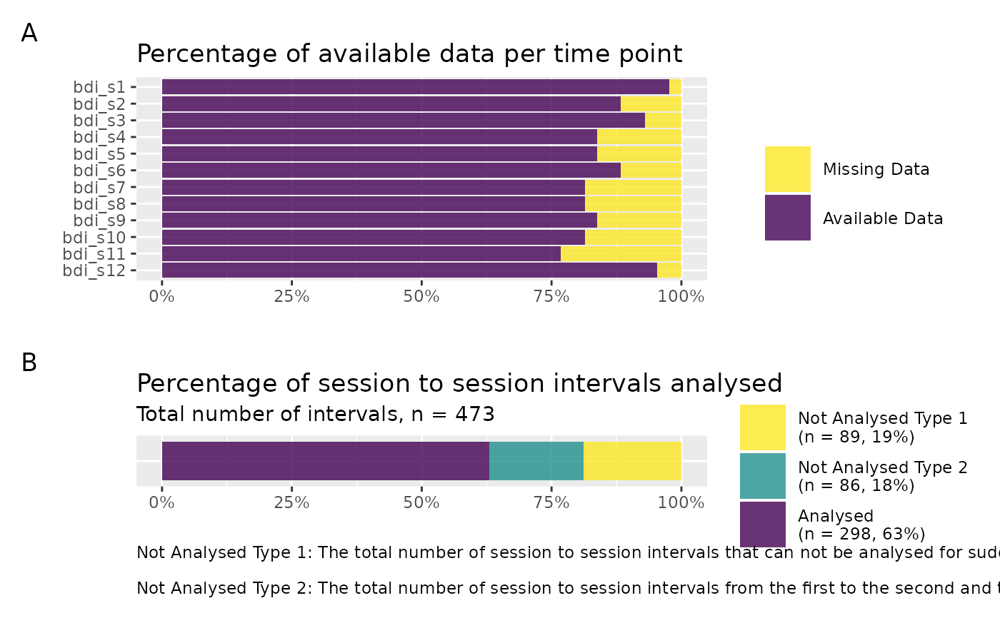

Plot summary of available data per time point and analysed session to session intervals
Source:R/plot_sg_intervals.R
plot_sg_intervals.RdPlot summary of available data per time point and analysed session to session intervals
Arguments
- data
A data set in wide format including an ID variable and variables for each measurement point.
- id_var_name
String, specifying the name of the ID variable. Each row should have a unique value.
- sg_var_list
Vector, specifying the variable names of each measurement point sequentially.
- identify_sg_1to2
Logical, indicating whether to identify sudden losses from measurement point 1 to 2. If set to TRUE, this implies that the first variable specified in
sg_var_listrepresents a baseline measurement point, e.g. pre-intervention assessment.
Value
Plot showing percentage of available data per time point and percentage of session to session intervals that were analysed for sudden gains.
Examples
# Create plot
plot_sg_intervals(data = sgdata,
id_var_name = "id",
sg_var_list = c("bdi_s1", "bdi_s2", "bdi_s3",
"bdi_s4", "bdi_s5", "bdi_s6",
"bdi_s7", "bdi_s8", "bdi_s9",
"bdi_s10", "bdi_s11", "bdi_s12"))
